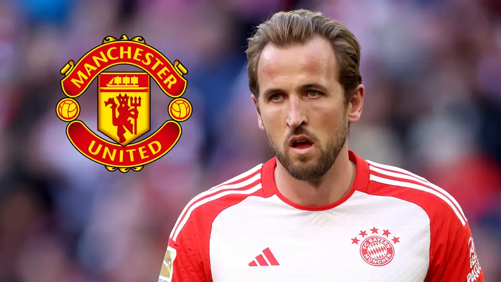

‘Man Utd will be his destination’ – Harry Kane backed for Premier League return from Bayern Munich as Tottenham transfer is ruled out
Harry Kane has been backed for a Premier League return, with the prolific striker being told “Manchester United will be his destination”.
The England captain bid farewell to his homeland in the summer of 2023 when completing a big-money transfer to Bayern Munich. He has broken through the 30-goal barrier in Germany, but is in danger of ending his debut campaign at the Allianz Arena without the major silverware that he craves.
Kane is expected to stick around in Munich long enough to see that he does collect honours that have so far proved elusive, having signed a contract until 2027, but he is also being tipped to retrace steps to the Premier League at some stage.
Spurs have admitted to having a buy-back option on Kane, but West Ham coach Kevin Nolan sees the 30-year-old frontman heading to Old Trafford. He has told talKSPORT: “I can certainly see him back in the Premier League. I don’t think Tottenham would have ever have sold him to Manchester United, but for him to go to Bayern Munich, then it’s easier for him to come back from Germany and I think Man United will be his destination. I think they (Bayern) would want their money back. Of course (he is worth it). 20+ goals every season and he was playing for Tottenham during them times as well. Realistically, are Man United as good as Tottenham? But I just think he brings a different aura to them anyway, a different aura to the team as soon as he puts the shirt on for, whoever. But I probably think Man United would be the one.”